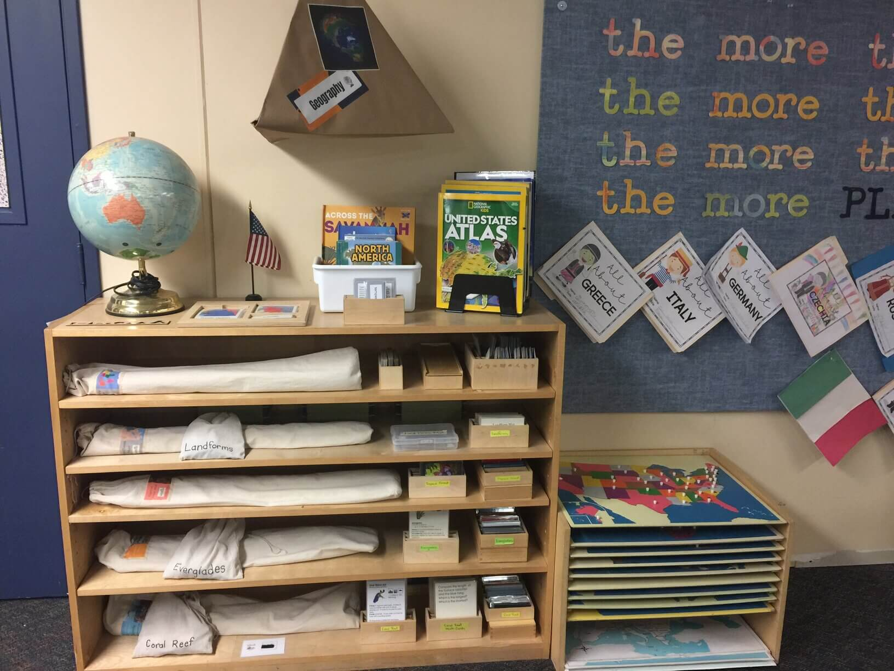
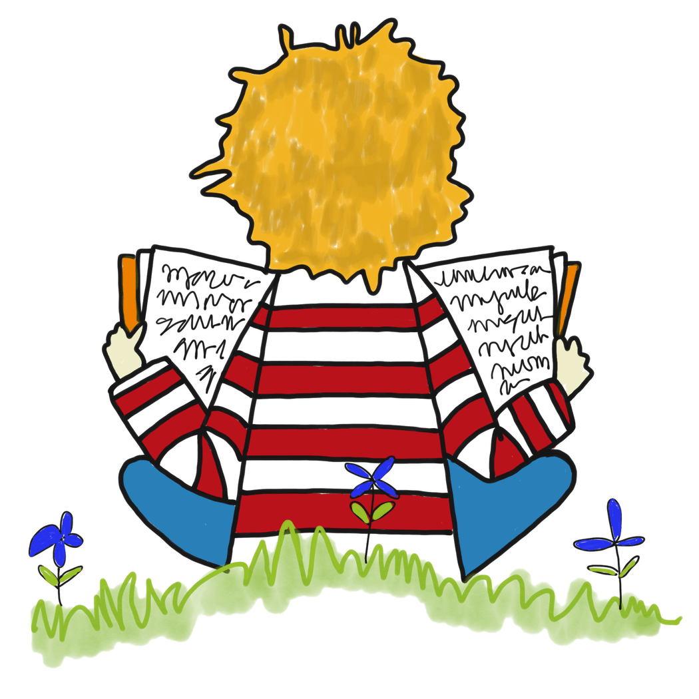
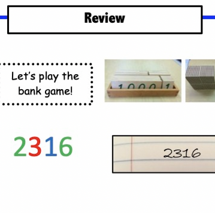

Please visit each icon every school day. Click on the icon, then choose one activity. Complete the activity. Have mom, dad, or your study buddy submit a picture of your work to Transparent Classroom. You may also put it aside and share it with me during our next Zoom conference.
Important Things to Remember
Oct 12th-14th Early Dismissal 11:30→ 1st Parent-Teacher Conferences (no students this time)
Oct 21st →
Friday Family Home-School Activity - Fleet Science Center
Oct 27th→ Family Dance
Oct 31st→ Family STEM Project due
Nov 3rd→ Montessori Journey

1st Grade Adventures
We are continuing our discussion of maps as we explore North America. We made a 'Me on the Map' book. We are building our spelling skills with spelling activities each day. This week week focused on /u/, please practice at home We learned how to make a 'beginning, middle, end' book. We have great imaginations and we like to share our stories with our friends.

Read for Fun
This is all about you. You choose any book; fiction, nonfiction, graphic novel, etc. Read by yourself. Read with a study buddy. You choose. Read for 20 minutes. Read for 30 minutes. Read for an hour. You choose. But, most imortant...Enjoy you time with literature.

Math
Complete at least one math card each day.
Click on the math card below to download the 'Math Card' file.
Each day read 1 chapter from the 'Core Knowledge' student reader. Then complete one activity from the list below. Click on the student reader below to download the file.
Using a balloon, make a paper maché globe of the world.
Color a map of the world. Label the continents and oceans. Click on the map below to download the file.
Write a 'Fun Facts F.E.E.D. Fred' about a chapter you read.

{kind=link}
{kind=link}